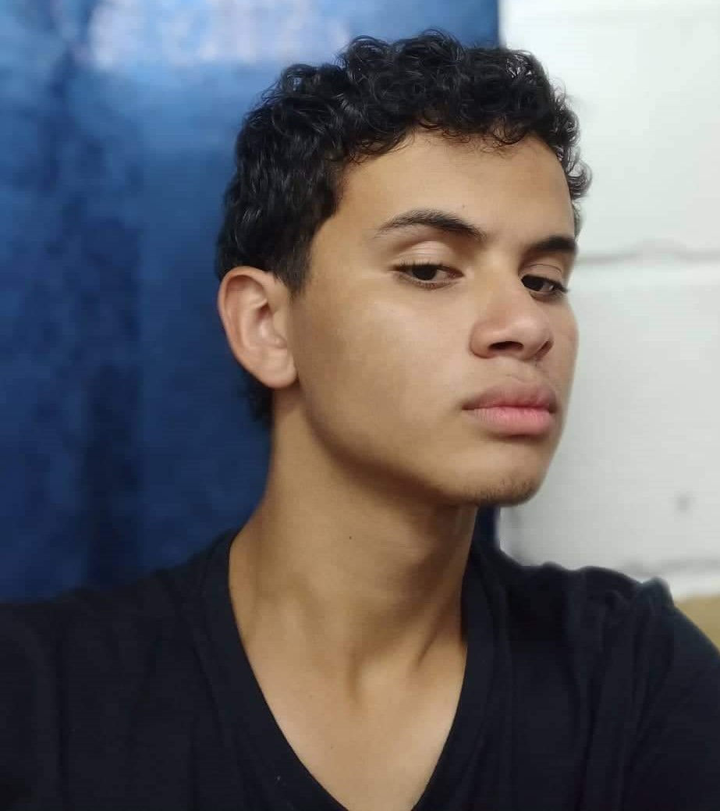

Bienvenidos mi pagina
Hoy estoy compartiendo con ustedes todo lo que aprendi en esta experiencia tan maravillosa que se llama Jovenes Creativos, donde a aparte de aprender a progamar, aprendimos a como mejorar emprender negocios y mejorar nuestilo de vida.
Me presento

Me llamo Jose Tomas Loaiza Rodriguez, tengo 18 años y vivo en la ciudad de Medellin en el barrio Robledo, Villa Flora, estudio en el colegio Villa FLora en el grado 10°1, despues de terminar mis estudios quiero seguir estudiando programacion, conseguir un trabajo estable y luego estudiar diseño grafico que es lo que siempre he querido.
 loaizarodrigueztomas@gmail.com
loaizarodrigueztomas@gmail.com Instagram
Instagram 320 757 9453
320 757 9453